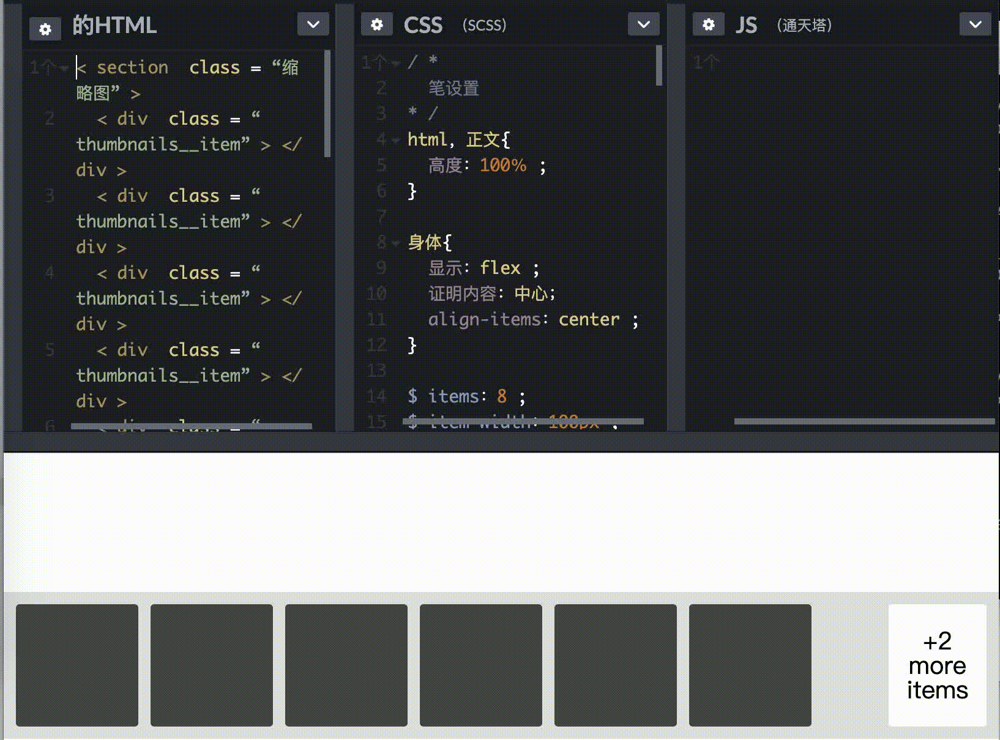
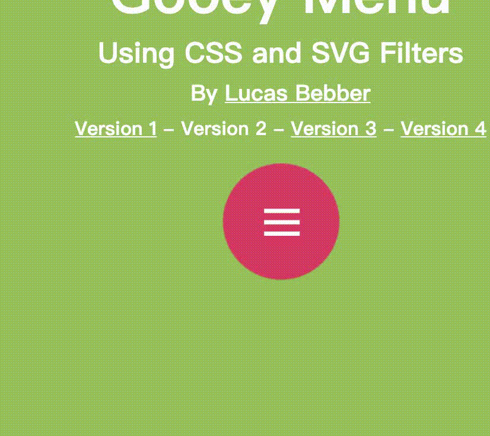
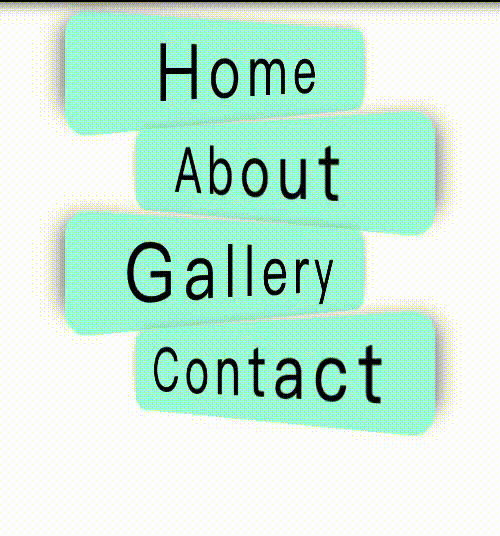
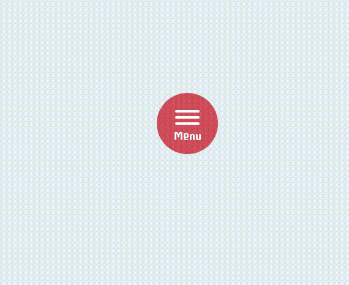
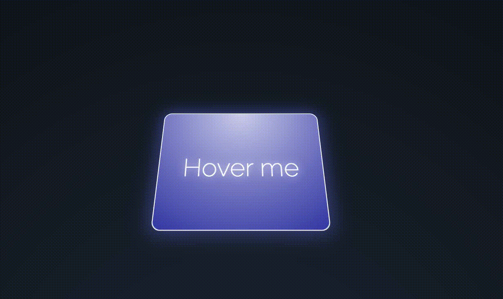

andy发表:2020-05-21 19:29:06
#>0. 当今JS大行其道吞噬一切,'凡能用js实现的，最终都会被js实现'-js's sologan。来看几个css用在特效领域的奇思妙用 #>1.利用css的counter,content两个属性实现剩余条数.可看官方文档 代码出处 效果如下图  #>2.利用input的checked属性来判断元素的点击事件，然后依据checked来执行动画效果，余言省略 代码出处 效果如下图  #>3.showdox + 3D旋转动效 transform Animation 我2013年学时兼容问题严重现在好用多了  代码出处  代码出处  代码出处 #>4.图片自适应块大小 object-fit:cover; img { width:200px; height:880px; object-fit:cover; } #>6.栅格布局 .div1 { grid-area: header; } .div2 { grid-area: menu; } .div3 { grid-area: main; } .div4 { grid-area: right; } .div5 { grid-area: footer; } div.grid-container { display: grid; grid-template-areas: 'header header header header header header'//6列 'menu main main main right right'//menu1 + main3 + right2 'menu footer footer footer footer footer';//menu1 + footer5 grid-gap: 5px;//块间距 background-color: #2196F3; padding: 56px; } #>7. css 的函数 .parentdiv { --bg-color: pink; --text-color: pink; } .test{ width: calc(100% - 150px);//计算 transition: width 2s; transition-timing-function: cubic-bezier(0.1, 0.7, 1.0, 0.1); color: var(--text-color);//变量可全局/可局部/可覆盖 } #>8.css 实体和html实体一样的效果 https://www.w3schools.com/cssref/css_entities.asp #>9.本网站的LOGO是一张纯CSS制作的图片